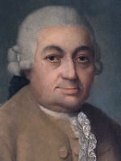
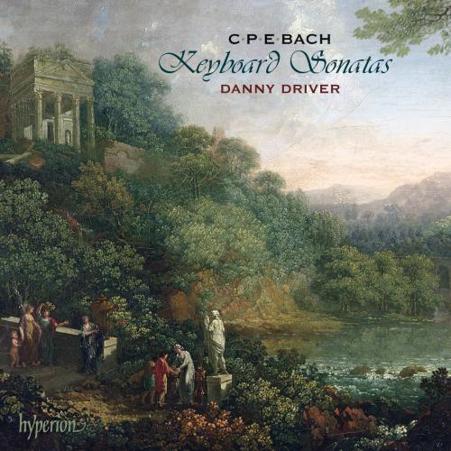
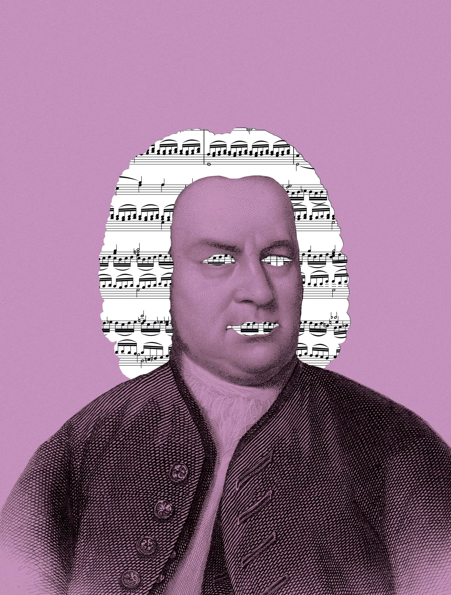

Johann Philipp Bach (Meiningen, 1752. augusztus 5. Meiningen, 1846. november 2.) német zeneszerző és festőművész. Gottlieb Friedrich Bach fia, apja halála után a meiningeni udvar udvari festője, orgonistája és csembalistája. Festeni Konrad Geigertől tanult. Több mint száz mű fűződik a nevéhez (festmények és pasztellek), melyek ma a meiningeni kastélyban találhatóak.
Festményei


